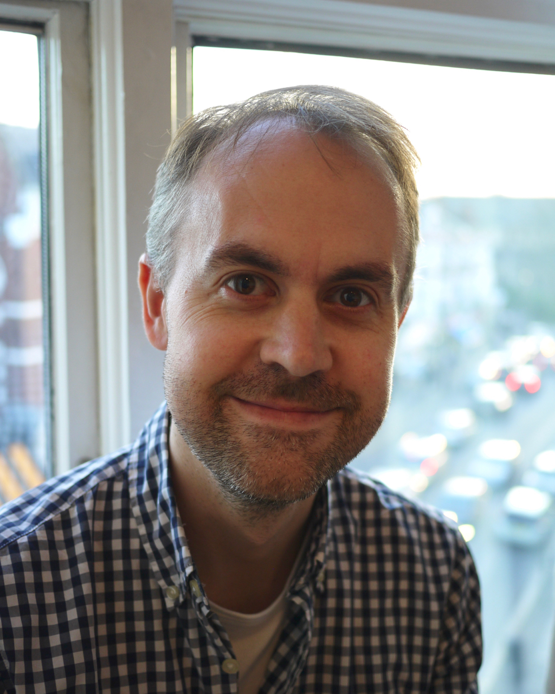

The world is in need of a growing number of skilled software engineers, and the world in which those software engineers work changes quickly and constantly. How can we best teach students to be skilled, thoughtful, software engineering practitioners for the modern world? Technology changes at an incredible rate. How can we best keep up with this and keep our teaching relevant and authentic? Are there fundamental principles which never change? What should a modern curriculum cover? Software engineering is a practical subject - what are the best types of practical exercises and projects to include in our courses? How best to assess them? Can we use technology to support our teaching, perhaps helping us to scale to more students? This symposium is a working gathering of educators to discuss approaches, sharing experiences and ideas, with the aim of advancing the state of practice in modern software engineering education. The workshop will be an in-person event, with an emphasis on discussion and practical, interactive sessions, over presentations. We want it to be a productive event generating new ideas.
Program
We are asking participants to register for the project, and once we have a sense of who will be coming, we will reach out and ask participants to collabratively create a program. You can see the program from a preview WMSEE here.
We envision that the program will include :
- Demonstrations of educational activities / materials
- Discussion of latest educational methods
- Community discussion of challenges facing the SE Education community
- Networking with and learning from peer instructors
- Discussion of career advancement for teaching focused faculty
- Other sessions as proposed by participants
Who is this for?
This event is for anyone who is teaching Software Engineering, and would like to discuss, compare notes, and learn from other SE educators.
Registration
We're planning a low-key event, so we don't need to charge a registration fee, but that means we won't have fancy catering etc. We'll recommend nearby places to get lunch / dinner etc. However, for planning purposes we are asking everyone to register by 15 April 2026. Please register to let us know you are coming Here
Accommodation
Some hotels nearby which we recommend.
- StayCity Aparthotels Dublin Mark Street
(rooms have kitchenette, one of our favorites, across the street from campus),
12 Mark St, Dublin, D02 EP98,
rated 4.7 on on Google Maps - Travelodge Plus Dublin City Centre
(budget friendly, slightly smaller rooms without kitchenette, 1 block away)
44 Townsend St, Dublin, D02 DY01,
rated 4.4 on on Google Maps - StayCity Aparthotels Dublin City Quay,
(similar to the StayCity in Mark Street, 2 blocks away, sometimes has better prices),
33/34 Moss St, Dublin Docklands, Dublin, D02 E732,
rated 4.8 on on Google Maps - Trinity City Hotel
(good hotel, might be best option if you have to book trough your university's travel agency),
Pearse St, Dublin 2, D02 FW96
rated 4.3 on on Google Maps
We suggest to book early, as Dublin gets busy in June and Guns'n'Roses are playing in the 3Arena on 10 June 2026.
Travel
Airport to City Center Dublin
Bus
-
- Aircoach and Dublin Express are good options.
- TFI (Transport for Ireland) are the standard bus lines.
- It is hard to recommend one option, since there are many routes. Many people use just use Google Maps to find whatever is leaving next.
-
To find the bus stop (Aircoach and DublinExpress are at the top right, near Terminal 2):
Taxi
- Taxi ranks (where taxis are waiting) are located right outside Terminal 1 and at near Aircoach at Terminal 2.
- For taxis booked via Uber or Freenow go to Zone 18.
- See maps
- If you want to come right to campus, navigate to Cloud Picker, 42 Pearse St, that is opposite the "Naughton Institute/Science Gallery" entrance to campus.
- 15 April 2026
Registration deadline
- 9-10 June 2026
WMSEE 26, Trinity College Dublin
-
Michael Hilton
Carnegie Mellon University, USA
Robert Chatley
Imperial College London, United Kingdom

Goetz Botterweck
Trinity College Dublin, Ireland
Location- We will meet at Trinity College Dublin, Ireland, Tue 9 and Wed 10 June 2026